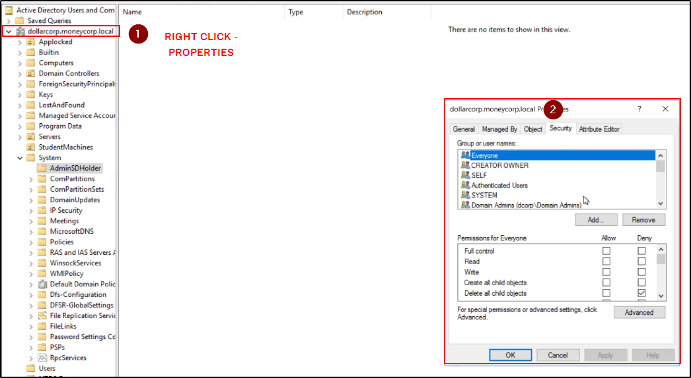
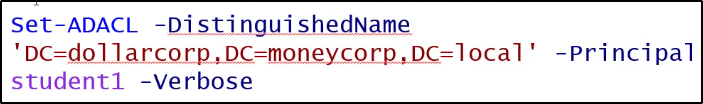

Rights Abuse
Con permessi da Domain Admin,
può essere modificate l'ACL del domain root,
per provvedere permessi utili come FullControl o
l'abilità di runnare "DCSync"
(Poi basta fare "Add", cerchi un nome utente, lo aggiungi e dai i permessi)

Ecco esempio di quali sono i permessi
che permettono di poter agire su DCSync:

Come aggiungere il permessi di FullControl su un utente, al dominio:


Come aggiungere i permessi da DCSync:
Questo ci permetterà di eseguire DCSync senza avere
permessi da Domain Admin!


In questo modo, possiamo runnare DCSync!